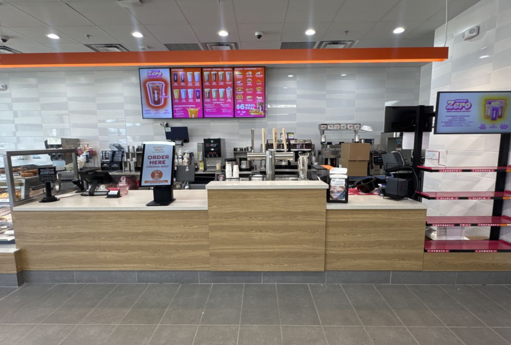
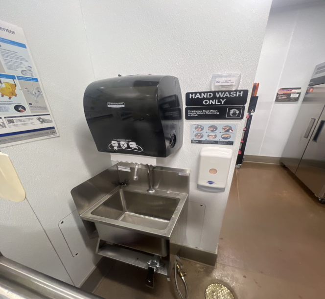

High-volume image validation and shift review operations across Dunkin', Arby's, Buffalo Wild Wings and more — ensuring brand compliance, food safety, and fraud-free audit reporting at scale.
Workgen Solutions delivered specialized backend shift review and image-based audit validation for Inspire Brands — the powerhouse behind Dunkin', Arby's, Buffalo Wild Wings, Sonic, and Jimmy John's.
The engagement centred on high-volume validation of field-submitted images and shift reports, ensuring accurate representation of store operations, hygiene compliance, and brand standards across thousands of locations simultaneously.
Workgen's team operated as a critical quality control layer — identifying inconsistencies, fraud risks, and operational gaps that directly impact food safety, regulatory compliance, and the consistency of the guest experience.

Processing thousands of image submissions daily across multiple distinct brands, each with its own compliance standards, audit criteria, and visual reference benchmarks.
Variable image quality, incorrect angles, and mismatched uploads from field staff required rigorous per-image review against task descriptions and reference standards.
Fraudulent, reused, or manipulated image submissions posed a significant compliance risk, requiring active detection and rejection to maintain audit integrity.
Maintaining consistent, standardized validation decisions across thousands of store locations demanded a structured decision framework that all reviewers could apply uniformly.
Sustaining high audit accuracy in real time at scale — without sacrificing throughput or allowing backlogs to accumulate — required a streamlined, repeatable review process with zero tolerance for errors.
Workgen executed a structured 4-phase image audit process — from queue preparation through to final submission — ensuring every image was reviewed accurately, consistently, and with full traceability.
Audit queues were refreshed at the start of each session to ensure only the latest, non-duplicate submissions entered the review pipeline, eliminating stale or redundant entries before processing began.
Each image was individually reviewed against three criteria to ensure it met the required standard before any decision was recorded:
Task Description
Cleanliness, equipment, branding compliance
Reference Images
Compared against approved visual standards
Clarity & Authenticity
Relevance, focus, and originality verified
Each reviewed submission was tagged to the responsible reviewer for full accountability, then logged with complete audit notes — creating an end-to-end traceable record ready for compliance reporting and internal dashboards.
Sample images from verified store compliance checks — representing the type of field submissions reviewed and validated by the Workgen team.

Hand wash station area reviewed for signage visibility, soap dispenser presence, sink condition, and compliance with food safety regulations.
Customer-facing counter validated for brand signage accuracy, equipment placement, menu board display, and overall store presentation standards.
Every validated image fell within one of six structured coverage categories — ensuring no compliance area was left unreviewed across any location.
Workgen's structured audit approach delivered measurable improvements across operational quality, compliance integrity, and reporting reliability:
Improved audit accuracy across thousands of locations, enabling consistent brand standards and operational benchmarking across every Inspire Brands concept.
Early detection and rejection of duplicate and manipulated images significantly reduced compliance risks and prevented inaccurate data from entering reporting pipelines.
Structured follow-up notes with clear correction guidance enabled field teams to resolve non-compliant images quickly, reducing audit escalations and cycle times.
A consistent, scalable decision-making framework supported high-volume audits reliably, feeding accurate data into performance dashboards and compliance tracking systems.
This engagement demonstrates Workgen Solutions' strength in image-based QA/QC, large-scale audit validation, and hospitality & restaurant compliance management. By combining structured review processes with a rigorous validation logic, Workgen delivered accurate, scalable, and audit-ready operations — helping Inspire Brands maintain excellence and brand consistency across its global multi-brand footprint.